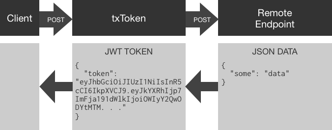

txToken is a small high performance microservice utility container. txToken is used for adding JSON Web Token based security to existing or new API development. txToken is specifically for systems that communicate in JSON over HTTP. txToken is called from a client with a JSON post body and passes received JSON to a remote endpoint. JSON retrieved from a remote endpoint is used to create a JWT token with an HS256 symmetrically encrypted signature.
Overview

txToken exposes an HTTP POST endpoint accepting JSON data, used to make a proxied POST to a remote server along with a preset bearer token. Validation of this token on the remote side is optional and only needed if the remote wishes to authenticate the txToken call using the shared key.
txToken can be run as a standalone binary on amd64 or arm6/7 based systems, however txToken is most at home in it’s Docker container within a Kubernetes cluster.
Implementation
For demonstration, assume the existence of a fictional API endpoint, something like https://auth.exmaple.com/login. login excepts POST body data in the form of JSON.
Example login:
curl -X POST \
https://auth.examle.com/login \
-d '{"email":"john.d@example.com","password":"12345"}'
Assuming verified credentials, our fictional login API returns an HTTP 200 status along with a JSON string containing info about the user.
Example login return data:
{
"status": "active",
"first_name": "John",
"last_name": "Doe"
}
If this were a real login service, we might also include an access control list, preferences or anything else we want a client to provide in subsequent calls to our broader system.
This fictional login service is secure, we POSTed credentials over SSL and although our example uses a password value of 12345 a real-world user would be required to have a more complex password, or even a public key or certificate, whatever the login service requires to authenticate the caller and send back relevant, trusted data. As long as this remote endpoint sends back JSON with an HTTP 200 status code txToken accepts it.
Architecture Considerations
In a monolithic system this login endpoint would generate a JWT token, and no further action is needed. However, in our microservice architecture the login endpoint is designed to be generic and only provide user data after validating credentials. Our example login service validates an email and password combination from a JSON payload and provides user details; logic is agnostic to higher level implementors.
As a microservice, this login endpoint is a generic user object getter, therefore implicitly supporting any number of authentication and ACL services above it.
In microservice architectures the system is a heavy user of its own API endpoints. Instead of using distributed libraries to share functionality among components microservices share API endpoints.
Cryptographically Signed Data
Our fictional login service returns a user object to its caller. However, the caller may be an untrusted user or system out of the scope and control of our system. txToken allows us to sign the object cryptographically, this allows other services within our system to verify the contents of the token.
txToken is easy to setup, it runs as a single binary or docker container. txToken reads a yaml configuration file from a path specified by the environment variable CFG_FILE.
Example txtoken-config.yml
# Example configuration
port: 8888
debug: true
encKey: "xxxxxxxxxxxxxxxxxxxxxxxxxxxxxxxxx" # 32-64 character string
remote: https://auth.example.com/login
expHours: 1
getTokenRoute: "/getToken"
checkTokenRoute: "/checkToken"
requestTokenData:
authorization: "internal"
In this example txToken services any HTTP POST to /getToken and /checkToken on port 8888 of the localhost. Securing txToken communication over SSL is the responsibility of the network layer; I use kubernetes ingress for this.
In the example configuration above, a client posts JSON to /getToken just as it would have to the login endpoint (fictional example above). txToken then issues a POST call to endpoint specified in the remote key of the yaml config using the JSON it received from the client.
txToken expects the remote endpoint to return an HTTP 200 status code along with JSON data.
If the remote endpoint does not return an HTTP 200 status code txToken will return an HTTP 500 status code and a message reflective of the failure:
{
"message": "Remote post status failure.",
"status": 500
}
If txToken receives an HTTP 200 along with valid JSON data the data is encoded and signed as a JWT token.
Example response (truncated):
{ "token": "eyJhbGciOiJIUzI1NiIsInR5cCI6..." }
Configuration and Implementation
The following provides examples of a simple Docker run command, a docker-compose configuration and a sample kubernetes configuration:
In each of the following implementations, I use the same configuration yaml.
Download and edit the example configuration to your meet your needs. The following curl command pulls the contents of the official example file example_cfg.yml and populates a new file called txtoken.yml. You can customize the config file name; however, I’ll stick with txtoken.yml for the examples below.
curl https://raw.githubusercontent.com/txn2/txtoken/master/example_cfg.yml >txtoken.yml
The config file consists of the following directives:
Config YAML
| key | description |
|---|---|
port: |
TCP port to listen on. Port 80 is a reasonable choice when using it for standalone Docker containers or in Kubernetes. |
debug: |
Debug mode increases the verbosity of log output. |
encKey |
The encryption key is a text string between 32 and 64 characters long used for HS256 symmetrical encryption of the JWT signature. |
remote |
The remote endpoint accepting JSON POST data and returning an HTTP 200 status code with JSON data. |
expHours |
expHours defines the number of hours a token is valid by setting the JWT token expiration date. Clients can use a token indefinitely, or request new tokens any time, however, a token older than the specified hours should not be considered valid be a system consuming the token. |
getTokenRoute: |
Customize the internal POST route for token generation. |
checkTokenRoute: |
Customize the internal POST route for token validation. |
requestTokenData |
The default here produces the following JSON {"authorization": "internal"}. You can add any JSON string to requestTokenData, however, since YAML is a superset of JSON you can add a YAML formatted key/value tree as you would a plain-text JSON string. Read more on requestTokenData below. |
requestTokenData
txToken proxies JSON POST data to an endpoint defined in remote: along with a with a Bearer Token in the request header. The remote: endpoint can use this for internal authentication. Utilization of the Bearer Token supplied by txToken to the remote: endpoint is optional. However, this may be useful as a secure and fast means of authenticating requests to the remote: API endpoint.
Docker Run
Run the following command to fire up txToken in the foreground and watch the logs:
docker run --rm \
-e CFG_FILE=/config/txtoken.yml \
-v $(pwd)/cfg.yml:/config/txtoken.yml \
-p 8888:8888 \
txn2/txtoken
In a separate terminal issue a curl call to txToken:
curl -X POST \
http:/localhost:8888/getToken \
-d '{"email":"john.d@example.com","password":"12345"}'
Docker Compose
Create docker-compose.yml consisting of:
version: "3.2"
services:
txtoken:
image: txn2/txtoken:latest
volumes:
- ./txtoken.yml:/config/txtoken.yml
environment:
CFG_FILE: /config/txtoken.yml
ports:
- "8888:8888"
Run docker-compose in the foreground to watch the logs:
docker-compose up
In a separate terminal issue a curl call to txToken:
curl -X POST \
https://auth.examle.com/login \
-d '{"email":"john.d@example.com","password":"12345"}'
Kubernetes
The following is an example of a Service, ConfigMap, Deployment, and Ingress combined into one file:
Resources
If you found this article useful, you may want to check out all my articles on Kubernetes, used to build on the Production Hobby Cluster, an excellent environment for developing and testing cloud-native microservices like txToken. While using Minikube or similar environments for testing and developing cloud-native microservices, I find it a much better experience to use a more true-to-production cluster.
If in a few days you find yourself setting up a Production Hobby Cluster in Japan or Germany on Linode, and another two in Australia and France on vultr, then you may have just joined the PHC (Performance Hobby Clusters) club. Some people tinker late at night on their truck, we benchmark and test the resilience of node failures on our overseas, budget kubernetes clusters. It’s all about going big, on the cheap.

This blog post, titled: "JWT Microservice, Tokenize Remote APIs: Using txToken to create JWT Tokens from JSON POST data." by Craig Johnston, is licensed under a Creative Commons Attribution 4.0 International License.